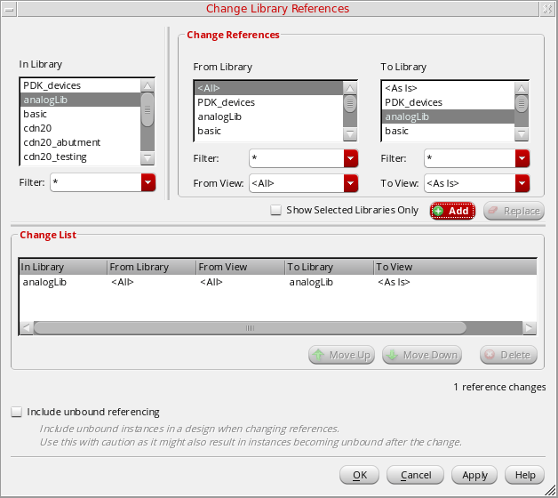
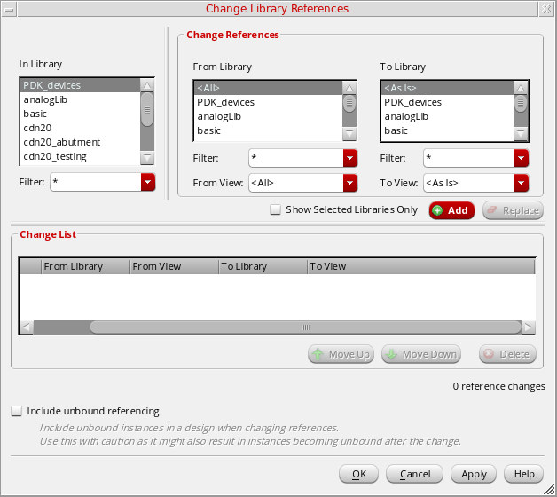

Changing Library Reference
There might be instances where you need to map all the instance from multiple libraries to a specified destination library. In such cases, you can use the Change Library References feature that enables you to map multiple libraries to the specified destination library at once.
For example, in design library, test, you can change the references of libraries, cdsDefTechLib and pc to the pc destination library, as shown below:

To change a reference library for a design library:
- Select the library that contains references you want to change.
-
Choose Edit – Change Library Reference.
The Change Library References form appears.
 - In the In Library list box, select the name of the design library that uses a reference library whose name you want to change.
- In the From Library list box, select the name(s) of the current design libraries.
- In the From Library list box, select the name of the new reference library.
- Click Add. The change list gets added in the Change List area.
- Click OK.
The system changes the references of the current libraries to the name of the new reference library for all instances in the specified design library.
Related Topics
Return to top